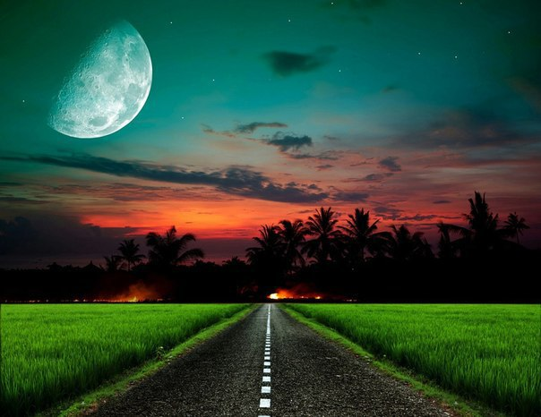

33 Осмысление истории Зарослей
Осмысливаю недавно законченную историю "Зарослей". Вероятно, если я доверю свои мысли бумаге, мне будет легче разобраться, ради чего все это было написано.
Никогда не продумываю сюжет изначально. Любая история для меня - это как приготовление зелья. Есть исходные ингредиенты, котел и вода. Соединяю все вместе, бросаю нескольких героев в какие-то условия, а потом ставлю над ними эксперимент, что же из этого выйдет. До самого конца для меня самой даже это остается загадкой. Иногда возникает огромное желание в процессе написания повернуть историю в другом направлении. Но я понимаю, что я уже не могу этого сделать. Мир начинает жить своей собственной жизнью по своей собственной логике. Изменить ее - значит, нарушить эту жизнь, этот поток. Значит, все разобьется вдребезги.
Конечно, я могу изначально расставить какие-то опорные точки, смутно разглядеть основную линию сюжета. Но ни более чем. Дело в том, что в процессе написания я ПРОЖИВАЮ происходящее, словно сама нахожусь в этих условиях до такой степени, что иногда ловлю себя на мысли, что до меня долетают запахи красной орхидеи, словно мой мир вырывается из рамок блокнота и вылезает через экран в реальность, зубастый, когтистый, мягкий, иногда ранит или ласкает меня саму. Я его чувствую, я его проживаю. Тогда вопрос - если это - лишь способ перенесения в новую реальность - зачем тогда вообще писать? Почему нельзя просто прожить это у себя в голове. Своеобразная медитация, почему нет? Возможно, это будет следующим этапом. Пока у меня нет необходимого навыка. Лишь только сообщаешь листу свои мысли, они, словно прочно впечатываются в него, история становится реальной, а уже не эфимерной, как некогда была в голове. Можно вернутся, перечитать. Но, так или иначе, удалось преодолеть границу между реальностью и фантасмагорией, "вытащить" сон в реальность. Теперь он и вправду становится практически осязаем и чем больше я изложу на бумаге, тем меньше из этого мира начинает принадлежать мне, у мира появляется собственная жизнь. А ведь это то, чего я так желаю. Значит, в нем останется элемент неожиданности, элемент открытия, элемент чувственности, еще ожидающей меня. С каждой буквой я словно втыкаю в канву иголку с ниткой, вышивая узор и вот он, здесь, да! Да, вся эта, казалось бы, бесполезная трата времени направлена лишь на то, чтобы прожить параллельную жизнь. Зачем мне это надо? А разве ответ не очевиден? Чтобы получить то, что мне не хватает в этой жизни, чтобы пережить ситуации, действительно сложные для меня и закалиться в них, чтобы узнать, кто я на самом деле и на что способна. Благодаря метаниям Хетиша я поняла, что способна задумать преступление. И осуществить его. Но лишь на бумаге. Я поняла, что существует грань. Но лишь однажды переступив ее, уже ничего не останавливает. А еще я поняла, что не могу совершить преступление, потому что существует наказание. Хетиш оказался в гипотетической ситуации - он совершает преступления, зная, что наказания не последует. Так я отметаю фактор наказания социума. Остается лишь внутреннее наказание. Но так ли оно сильно? Как выясняется - это то, что гнетет Хетиша до конца повествования, это остутствие ответа на поставленный вопрос Макеавелли несколько веков назад "Цель оправдывает средства? Оправдывает ли самая светлая цель самые гнусные средства ее достижения?". На протяжении всей истории Хет ищет ответ, лишь в конце его сознание не выдерживает, у него в мозгу что-то поворачивается от этой неразрешимости и он твердо отвечает "да". Теперь это становится одной из нерушимых аксиом, на которых базируется его мир. До последнего Хет переживает совершенное убийство, убеждая себя, что это была лишь игра. Но во время игры в рулетку он признается, что ДА. Что он - преступник. Вся эта новогодняя гирлянда, игра, под которой он маскирует далеко не лицеприятные вещи тает вмиг и он оказывается один на один со своим злодеянием. ДА. Он - виновен. Ведь он же до самого конца не является абсолютно сумасшедшим - он все осознает более-менее адекватно и это его гнетет. На протяжении всей истории он пытается установить новые постулаты, новые правила игры, в рамках которых все его злодеяния имели бы совсем другой сакральный смысл, словно изобретатель, который пытается подменить мировые константы, видя, что его гениальная машина дает сбои. И, как это ни прискорбно, Хетишу удается это, хотя под конец. Да, до этого момента в нем, как говорил Чарльз, еще оставалось что-то светлое, он еще был излечим. Поскольку мучался. В конце он больше не мучается. Он собирается сделать мир счастливым, даже против его воли. Наивное желание ребенка найти Механизм Счастья перерожается в нем в такие искаженные формы. Он хочет искоренить зло в мире, с помощью ли черной магии или с помощью правильного вложения денег - уже детали. Но факт в том, что в этот момент зарождается фанатик-маньяк. Все. Он потерян. Я чувствала, что все к этому шло. Но до последнего момента тешила себя призрачной надеждой. И все же, нет. Нет! Чуда не произошло. Он не спасся. Но ведь я же в тайне от себя это ожидала.
Я хотела пережить вместе с Хетишем эту сложную ситуацию, поставить себя в те условия, в которых, надеюсь, не окажусь никогда. Ведь, несмотря на то, что Хетиш - мужчина, всю историю я ассоциировала себя именно с ним, я вкладывала ему мои собственные мысли. Все остальные для меня были на втором плане, как инструменты, необходимые для дополнительного выражения Хета.
Элодея никогда его не любила, поскольку она лишена возможности любить - он для нее лишь несостоявшаяся жертва и она его за это в душе не простит. Женщина-охотница. Если отвлечься от Зарослей, от фантастики и волшебства - это представительница той группы женщин, которые не любят, лишь подкармливают свое тщеславия, удовлетворяя свои амбиции.
Что касается Хиды - в душе ее живет огонь, который однажды вырывается. Она из тех, кто готов воевать против всего мира за свое счастье, при этом, как и Хет, она довольно эгоистична. Они во многом похожи, как заметил Хет. Авантюристы. Игроки. Лицемеры. С виду толстокожие - в душе ранимые. Чужие в этом мире. В чем-то неприспособленные. Это даже касается Хета. Хотя деньги так и шли к нему, он был из тех, кто не пропадет, кто не будет без нужды транжирить средства - эмоционально он был абсолютно неприспособлен. Он не мог переносить стрессы, у него не было должной закалки. Поэтому он не выдержал и сошел с ума. Но при этом его воля не была подавлена, он выпустил когти против окружающего мира. Он научился его ненавидеть. И все повествование он уверяет себя в том, что он - борец за справедливость, что мир нечестен и жесток, тем самым пытаясь получить "индульгенцию" на свои злодеяния.
Я не являюсь "мазохисткой", мне не доставляет никакого удовольствия мучаться вместе с Хетом. Помимо уже сказанного - желанием узнать себя, побывав в чужой шкуре, есть еще одна вещь, которую греки называли "катарсис". История этого слова такова: древние греки очень любили жанр трагедии, даже больше других жанров. Казалось бы, почему? Они что, были мазохистами? Нет, ничуть. Просто после просмотра трагедии они выходили и понимали, что по сравнению со страданиями главных героев, по сравнению с мучениями Прометея или метаниями Медэи все их жизненные проблемы, которые им казались важными - лишь досадная мелочь. Появляется то, с чем можно сравнить. Таким образом я, прожив эту параллельную жизнь, вернулась и поняла, что я счастлива. Что я вытянула счастливый лотерейный билет в жизни, что у меня настолько все хорошо, я еще молода (в отличии от Хета, хотя у меня и нет вечной молодости) и передо мной этот огромный-огромный мир.
Но и это еще не все. Должна признаться, что есть еще одна причина, помимо уже изложенного, которую я уже вскользь упомянула. Почувствовать, пережить то, чего не имею в этой жизни. При этом я вовсе не имею в виду прогулку по Змеиному Гроту, по фиолетовой пещере, скорее, я имею в виду вещи более реальные.
Жизнь - это огромный базар, где продаются блестящие жестянки и продается золото. Жестянки иногда сверкают даже ярче, они лежат на самых первых прилавках. А чтобы найти золото - надо побродить по этому базару.
Так вот. Я не хочу жестянок. Я не хочу обманывать себя и в конец остаться разочарованной. А ничего другого мне пока не открывается на этом базаре. Или открывается, но это не для меня. Оно либо уже продано, либо отложено кому-то другому. Все эти годы, как я желала найти, я оставалась не с чем. И ждать чего-то еще мне причиняет боль. Я просто больше не могу, я не вынесу этого. Поэтому лучше поставить точку и довольствоваться тем, что имеешь. Поскольку, когда ждешь - не ценишь то, что имеешь. И жизнь проходит в ожидании.
Еще одна причина, зачем я написала эту историю: для меня это словно закатывание банок с варением - потом, зимой, когда простудишься, откроешь заветную банку, зачерпнешь ложечку лета. Это - еще одна поддержка для меня в трудных ситуациях. Есть мир, куда можно ненадолго спрятаться и там, в безопасности все обдумать. Перечитывая, я снова проваливаюсь в ту реальность. Возникает небольшая аналогия с "Вином из Одуванчиков" Рэя Брэдбери
Поставив вопрос о механизме счастья, я сама, при помощи абсолютно различных персонажей искала ответ на этот вопрос - что же такое счастье, откуда оно берется. Почему то, что одного делает счастливым, другого разочаровывает? И я ответила на него (хотя, и это был не окончательный ответ, как потом выяснилось). Счастье надо создавать. Надо творить. Счастье это как ремесло. И, как и в каждом ремесле, надо прилагать усилия, а не ждать, что оно придет само. За счастьем надо охотиться. НО! не пытаться отнять его у других, его нельзя купить, выменять, отнять. У каждого счастье свое, никто не бывает счастлив чужим счастьем. А вообще мысли о счастье (точнее, где его достать) у многих возникают от безделия и праздности. Когда человек работает для него - хорошенько выспаться утром, а не вставать в шесть утра - высшее блаженство. Это все так. Но тогда до чего мы доходим. Для голодающего счастье к еде. Но стоит ли сводить счастье только к удовлетворению необходимостей? И не является ли напряженная трудовая деятельность еще одним способом побега, правда, побега с "индульгенцией", с отличным самооправданием. Не придирешься. Но, по сути, не является ли это отчасти тем же, что и безумное времяпрепровождение на Вечеринке Лунатиков - еще одной аллегории. Счастье в забвении. Счастье в иллюзии счастья. Правда в первом случае эта иллюзия возникает за счет удовлетворения от проделанной работы (я молодец! я это сделал! я вышел на новую ступень! амбиции), а во втором - от, скажем, блокировки серотониновых рецепторов азотсодержащими гетероциклическими соединениями... Модель ключ-замок. Механизм Счастья прост. В мозгу вырабатывается гормон и соединяется с определенным рецептором, причем соединиться может именно он, а не какой-то другой, потому что он представляет собой "ключ", в то время как рецептор - "замок". Лишь правильный ключ подойдет к замку. А тут мы имеем дело с "отмычкой". С неправильным ключем. С каннабинолом, каким-нибудь или даже... За все приходится платить. И за Вечеринку Лунатиков тоже. Ведь где-то поблизости поджидает паук. Цап - и ты уже в его паутине. Нет, так не годится. Давайте лучше первый, праведный путь побега от счастья.
Разве этих причин недостаточно, чтобы потратить время и накидать полмега всякой дребедени?
Я не пишу для публики. Почему? Потому что это - прежде всего мир, мой мир. Это еще непроявленная пленка, которую нельзя показывать на свет, иначе она рискует разрушится. На нее можно смотреть только через инфракрас. Потом, когда этот мир уже перестанет быть настолько моим, начнет жить абсолютно обособленно, как ребенок, мне уже будет безразлично. Когда я сама переменюсь до такой степени, что описанные события перестанут так сильно затрагивать и цеплять меня. Но тогда, еще одно ключевое слово, мне будет безразлично. Пока нельзя, а потом безразлично. Я слишком замкнута, я не желаю показывать свою душу всему миру. Написанное для меня как портрет Дориана Грея - пока я остаюсь в маске он иногда принимает даже нелицеприятные формы. Я не хочу, чтобы его видели. И это объяснимо. Существует такой феномен, хорошо известный психологам - иногда после того, как человек показывает тебе свою душу, он начинает тебя ненавидеть. Отчасти это, думаю, потому, что он чувствует, что теперь стал уязвим, что ты словно преобрел перед ним некое преимущество. Что стены его крепости стали прозрачны для тебя. Что ему будет труднее тебя обмануть. Корни этого ведут к инстинкту самосохранения и желанию казаться лучше, чем ты есть.
Я до последнего не знала, чем все это кончится. Лишь вчера вечером я узнала концовку. Да, я даже скорее оказываюсь зрителем, читателем. Поскольку когда все это пишется - пишется в состоянии, близком к медитации. Я перестаю чувствовать жару и холод и все остальное из этого мира, но зато со страниц начинают проникать запахи, звуки, ощущения. Если я пишу о тропиках, то, несмотря на холод за окном, мне становится жарко. Если пишу о цветах, я чувствую их аромат в окружающем воздухе. Возможно, поэтому я не могу долго описывать страшные моменты. Не хватает духа и выдержки. Ведь я САМА начинаю бояться. Поэтому страшные эпизоды, где шла речь про убийство, оказались настолько скомканны.
Остается лишь вопрос: почему я поставила точку на этом месте, а не продолжила дальше? Верно, история продолжается. Только я не хочу ее продолжать. Потому что продолжение уже нарисовалось и оно довольно тяжелое. В эмоциональном плане. Хет не может вечно играть безнаказанно. Вскоре должен наступить день, когда он доиграется. Не знаю, чего уж там с ним произойдет - пулю в лоб пустят, отравят, да и какая разница?
Далее, мне хочется провести исследование возможностей человеческой психики, "скольжения" по удивительным псевдореальным коридорам. С момента моего рождения мне свойственно видение реальности другое, чем у остальных - я не знаю, что это. Дар божий или самое большое искушение в моей жизни. Не важно. Так или иначе, это мой путь и только мой. Причем, я чувствую, как это "скольжение" усиливается по экспоненте - с каждым новым днем я все больше и больше ощущаю то, что за гранью.
Что если открыть весь наш скрытый потенциал? Неужели не интересно, не заманчиво? Ведь мы могли бы прикоснуться к тому, о чем сейчас не можем и мечтать... Открыть себе такие способности, которые бы перевернули наш мир... перейти на новый уровень. Скажем, понять, что по сравнению с новым, обретенным, я раньше была на том уровне, что моя кошка - житейски умна, всегда умею во время утащить, достать, хамелеониться... которая может спокойно уплетать вискас, не догадываясь, что живет "под небом Шиллера и Гете". и я уверена, что этот будет качественный скачок, прорыв... и опять же - отсылка к Макеавелли... разве цель оправдывает средства? Я чувствую, что это - крайне опасный путь, что на нем элементарно сойти с ума. Но я играю. Ва-банк. Я выступаю как ученый - просто мои методы немного расходятся с методами традиционной науки. Как я это собираюсь сделать... пусть это будет моей маленькой тайной.
Итак...
Прожитое мной во время написания можно сравнить с одной из любимых восточных концепций - что жило-было одно единое божественное сознание, ему стало "скучно" самому с собой и оно решило разделиться на множество маленьких и прожить их жизни. Я выступала в роли этого большого сознания, которое разделилось на много персонажей и прожила много гипотетических ситуаций, которые не могли бы произойти в реальных условиях - как физики, которые работают с приближением сферы в вакууме или полностью инерциальной системы отсчета - чего в реальности не бывает. Нереальным критерием было то, что Заросли нельзя было уничтожить, в них нельзя было попасть, на них нельзя было сбросить бомбу, при этом это был абсолютно реальный, существующий, а не параллельный мир - хотя, на самом деле, заросли - это лишь аллегория душевного пути, метания разных людей, которые находятся в поиске чего-то вечного или мимолетного, преходящего, сиюминутного....
Основной момент второй части - будет путешествие к себе через сюрреалистические дебри. Я пройду его сама, иначе написанное будет банальной выдумкой. Хотя, возможно, после его прохождения я вообще забуду об идее написать вторую часть. Еще любопытный момент - что будет, когда я миную "точку невозврата". Смогу ли я дать себе в этом отчет? Или когда я это пойму - уже будет слишком поздно? При моем выборе я опираюсь прежде всего не на логические умозаключения, а на движения души, на свой внутренний голос, внутренний свет...
